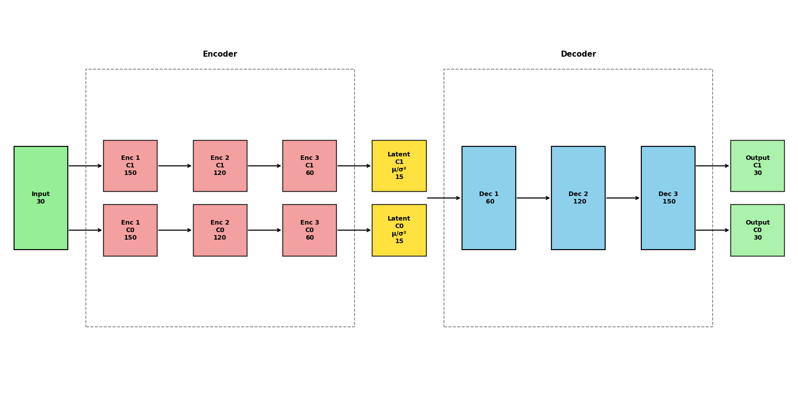

CISS-VAE
Python implementation of the Clustering-Informed Shared-Structure Variational Autoencoder (CISS-VAE)
CISS-VAE is a flexible deep learning model for missing data imputation that accommodates all three types of missing data mechanisms: Missing Completely At Random (MCAR), Missing At Random (MAR), and Missing Not At Random (MNAR). While it is particularly well-suited to MNAR scenarios where missingness patterns carry informative signals, CISS-VAE also functions effectively under MAR assumptions.

Click Here for More Information
A key feature of CISS-VAE is the use of unsupervised clustering to capture distinct patterns of missingness. Alongside cluster-specific representations, the method leverages shared encoder and decoder layers. This allows for knowledge transfer across clusters and enhances parameter stability, which is especially important when some clusters have small sample sizes. In situations where the data do not naturally partition into meaningful clusters, the model defaults to a pooled representation, preventing unnecessary complications from cluster-specific components.
Installation
The CISS-VAE package is currently available for python, with an R package to be released soon (see rCISSVAE github page for updates). It can be installed from either github or PyPI.
# From PyPI (package not on pypi just yet)
pip install ciss-vaeOR
# From GitHub (latest development version)
pip install git+https://github.com/CISS-VAE/CISS-VAE-python.gitImportant!
For run_cissvae to be able to handle clustering, please install the clustering dependencies scikit-learn and leidenalg with pip.
pip install scikit-learn leidenalg python-igraph OR pip install ciss-vae[clustering]
Quickstart Tutorial
The full vignette can be found here.
The input dataset should be one of the following:
- A Pandas DataFrame
- A NumPy array
- A PyTorch tensor Missing values should be represented using np.nan or None.
import pandas as pd
from ciss_vae.utils.run_cissvae import run_cissvae
# optional, display vae architecture
from ciss_vae.utils.helpers import plot_vae_architecture
data = pd.read_csv("/data/test_data.csv")
clusters = data.clusters
data = data.drop(columns = ["clusters", "Unnamed: 0"])
imputed_data, vae = run_cissvae(data = data,
## Dataset params
val_proportion = 0.1, ## Fraction of non-missing data held out for validation
replacement_value = 0.0,
columns_ignore = data.columns[:5], ## Names of columns to ignore when selecting validation dataset (and clustering if you do not provide clusters). For example, demographic columns with no missingness.
print_dataset = True,
## Cluster params
clusters = None, ## Where your cluster list goes. If none, will do clustering for you
n_clusters = None, ## If you want run_cissvae to do clustering and you know how many clusters your data should have
seed = 42,
## VAE model params
hidden_dims = [150, 120, 60], ## Dimensions of hidden layers, in order. One number per layer.
latent_dim = 15, ## Dimensions of latent embedding
layer_order_enc = ["unshared", "unshared", "unshared"], ## order of shared vs unshared layers for encode (can use u or s instead of unshared, shared)
layer_order_dec=["shared", "shared", "shared"], ## order of shared vs unshared layers for decode
latent_shared=False,
output_shared=False,
batch_size = 4000, ## batch size for data loader
return_model = True, ## if true, outputs imputed dataset and model, otherwise just outputs imputed dataset. Set to true to return model for `plot_vae_architecture`
## Initial Training params
epochs = 1000, ## default
initial_lr = 0.01, ## default
decay_factor = 0.999, ## default, factor learning rate is multiplied by after each epoch, prevents overfitting
beta= 0.001, ## default
device = None, ## If none, will use gpu if available, cpu if not. See torch.devices for info (link)
## Impute-refit loop params
max_loops = 100, ## max number of refit loops
patience = 2, ## number of loops to check after best_dataset updated. Can increase to avoid local extrema
epochs_per_loop = None, ## If none, same as epochs
initial_lr_refit = None, ## If none, picks up from end of initial training
decay_factor_refit = None, ## If none, same as decay_factor
beta_refit = None, ## if none, same as beta
verbose = False
)
## OPTIONAL - PLOT VAE ARCHITECTURE
plot_vae_architecture(model = vae,
title = None, ## Set title of plot
## Colors below are default
color_shared = "skyblue",
color_unshared ="lightcoral",
color_latent = "gold",
color_input = "lightgreen",
color_output = "lightgreen",
figsize=(16, 8),
return_fig = False)
The CISS-VAE package includes the option to perform automated hyperparameter tuning with OPTUNA
See tutorial for more details.